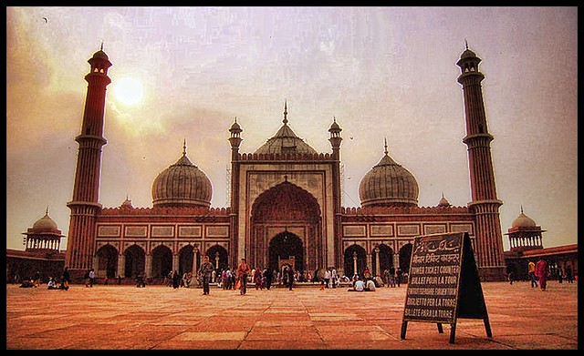

Delhi is irresistible

Red Fort
The fort was plundered of its artwork and jewels during Nader Shah's invasion of the Mughal Empire in 1739. Most of the fort's marble structures were subsequently demolished by the British following the Indian Rebellion of 1857. The fort's defensive walls were largely undamaged, and the fortress was subsequently used as a garrison.

Lotus Temple
The architect of the Lotus Temple was an Iranian, Fariborz Sahba who now lives in La Jolla, California,[6] after spending some years in Canada.[7] He was approached in 1976 to design the Lotus Temple and later oversaw its construction.

Jama Masjid, Delhi
Masjid-i-Jehan-Numa (Persian: مسجدِ جهان نما), commonly known as the Jama Masjid of Delhi, is one of the largest mosques in India.[1]
It was built by the Mughal emperor Shah Jahan between 1644 and 1656, and inaugurated by its first Imam, Syed Abdul Ghafoor Shah Bukhari. Situated in the Mughal capital of Shahjahanabad (today Old Delhi), it served as the imperial mosque of the Mughal emperors until the demise of the empire in 1857.